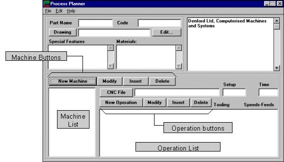
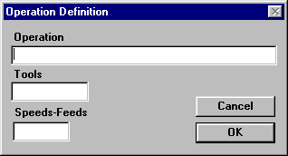

The Process Planner
The Process Planner is simply a documentation tool, used to describe the functions necessary to produce a component. Each component has a unique name, an identification number and several other properties defined by the process plan; the machining and measurement requirements are listed together with timing information and all tooling and work-holding data.
To enhance the power of the Process Planner, the Opitz Component and Material Classification System is provided to help apply a group-technology identification number to each component. Each digit of the Opitz-number refers to a particular characteristic of the component, hence components with similar characteristics can be grouped into component families.
Usage
The Process Planner is a documentation tool which aids in the creation of a component database. Its interface is a simple form to be filled in with the relevant details. When the application is started, a blank form appears:

The Process Planner
To create a new component the component name must be entered into the
Part Name box. All other information is optional, but completing the form provides a useful record of the manufacturing requirements of the component.The
Code box may hold any internal reference to a component which is meaningful to the user’s organisation, or may be left blank. Another option is to generate a group-theory component code by pressing the Code button. ()A CAD drawing may be associated with the component by typing its name into the
Drawing box, or by using the button to select one from the database. The Drawing button creates a standard file selection dialogue and transfers the chosen name to the Drawing box on the form.The two large boxes labelled
Special Fixtures and Materials enable the user to enter any component specific details concerning fixtures and materials. These boxes allow the entry of more than one line of text, as does the large box on the right which is available for any extra notes that need to be maintained.To associate a machine tool resource to a component, the
New Machine button should be pressed. A dialogue appears which prompts for a machine tool name which is added to the Machine list when the OK button is pressed. Now the details of that tool can be added in the CNC File, Setup and Time boxes. A Machine may have a name or reference number and may use a CNC file for the production of the component. The two time values are for setting up tools and fixtures and for the actual machining duration.Note: machines such as robots, conveyors and storage devices (which only handle material) should not be entered at this stage if they do not play a part in altering the shape or value of the component. It is possible to produce a component using any shop-floor layout, providing it contains the correct production machines; however the material handling devices vary from layout to layout and hence should not be defined in the process plan of a particular component. These devices should only be added when a route for the component is created with a particular shop-floor layout.
The operations to be carried out on that machine are edited by means of the Operation buttons. These buttons allow the user to create a new operation; modify and delete existing operations and to insert operations into the list.
This New Operation button creates a Operation Definition form.

The Operation Definition Form
This creates a record of the details relating to a single operation to be carried out on a machine tool used in the production of the component. When the OK button is pressed the new operation is added to the Operation List.
The Operation box could contain a textual description of each operation to be undertaken. The Tools required together with the Spindle Speeds and Feed Rates can also be stored in the appropriate boxes.
Any number of machines may be added to the list for a component and any number of operations can be stored for each machine. When a machine name is highlighted in the Machine List box, the operations for that machine are displayed in the Operations List together with the CNC File and the timings.
Process Planner Controls
The
File MenuNew
– Clears the current process plan and allows a user to start with an empty form after first prompting to save any data.Open...
– Allows the user to select a process plan from the file store and will open the file for editing.Save
– Uses the name in the Part Name edit box to save the process plan for the component with a .pp extension. If there is no name one must be entered.Print...
– Sends the entire Process Plan to the specified printer. The machines and all the operations are listed consecutively.Print Preview...
– Displays a draft printout of the process plan.Print Setup...
– Allows the user to choose and configure a printer.Exit
– Quits the Process Planner application after prompting to save any modified data.
The Form
Route Button
– Starts the Denford Route Planner application for the current process plan.Drawing Button
– Sends the drawing filename in the Drawing edit box to a CAD package specified in the pp.ini initialisation file.
The Machine buttons
New Machine Button
– Prompts for a machine name and adds it to the machine list.Modify
– Allows the user to modify a machine name.Insert
– Inserts a new machine before the currently selected machine.Delete
– Deletes the currently selected operation.
The Operation buttons
New Operation Button
– Displays the Operation Definition form and adds the new operation to the end of the Operation List.Modify
– Opens the Operation Definition box to allow the user to modify the currently selected operation.Insert
– Inserts a new operation before the currently selected operation.Delete
– Deletes the currently selected operation.